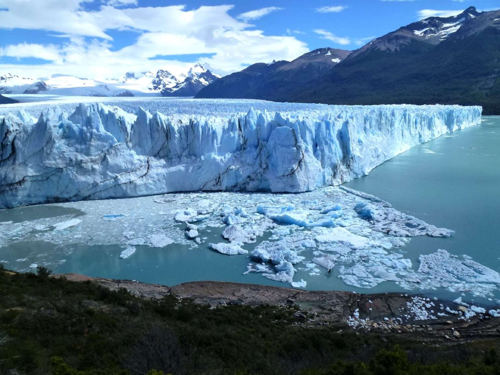
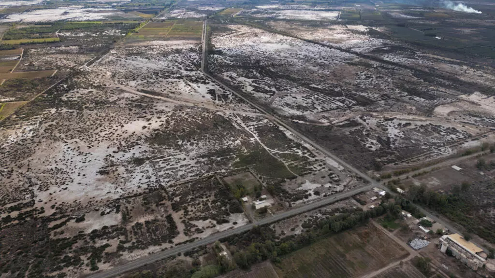

ATRAVESAMOS TIEMPOS INUSUALES
Nuestros glaciares están cambiando a un ritmo sin precedentes, recordándonos la fragilidad del equilibrio natural. Somos una plataforma dedicada a la concientización y preservación de estos gigantes de hielo, pilares fundamentales de nuestras reservas de agua dulce y reguladores del clima global.
Ley de GlaciaresNUESTROS PROGRAMAS
Convertimos la preocupación en acción. A través de nuestras distintas líneas de trabajo, abordamos la problemática de los glaciares desde la ciencia, la educación y el compromiso legal, buscando soluciones concretas para cuidar nuestras reservas de agua dulce.
VER PROGRAMAS 
NUESTROS GLACIARES
Informe 2019
Durante el último siglo, pero con mayor intensidad a partir de la década de 1960, la temperatura media del planeta ha aumentado...
LEER INFORME
Glaciares Argentinos 2026
En el escenario climático de 2026, la distribución de nuestras masas de hielo a lo largo de la cordillera revela patrones críticos de vulnerabilidad. Este apartado presenta un análisis exhaustivo de la superficie glaciar en el territorio nacional, utilizando representaciones gráficas para mapear su ubicación actual por provincias. Comprender cómo se distribuyen estas reservas estratégicas de agua es el primer paso para dimensionar el impacto del calentamiento global en nuestra región.
DISTRIBUCIÓN DE GLACIARES
ACTUALIDAD
En esta sección, recopilamos las noticias clave para entender cómo las decisiones gubernamentales de 2026 están redefiniendo —y poniendo en riesgo— el futuro de nuestro patrimonio natural.

El Gobierno celebró la aprobación de la reforma de la ley de Glaciares: “Devuelve a las provincias la competencia que les corresponde”
Leer Más
El Gobierno promulgó la reforma de la Ley de Glaciares: cuáles son las modificaciones que entraron en vigencia
Leer Más
Ley de Glaciares: con apoyo de los gobernadores, el Gobierno consiguió sancionarla en Diputados
Leer Más
Los glaciares se quedan sin protección y las mineras ya se relamen
Leer Más
Ambientalistas impulsan demanda colectiva tras aprobación de ley de glaciares en Argentina
Leer Más
La provincia argentina sin agua pero repleta de glaciares que mide el costo de la minería
Leer MásDiputados a favor de modificar la ley glaciares
Registro de los diputados que votaron a favor de la modificación de la ley glaciares.